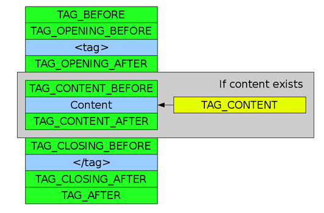

- 7. API Reference
7.9. Opt_Xml_Buffer class - 7.8.8. setValue()
« Previous - 7.9.1. addAfter()
Next »
7.9. Opt_Xml_Buffer class
Table of Contents
- 7.9.1. addAfter()
- 7.9.2. addBefore()
- 7.9.3. bufferSize()
- 7.9.4. buildCode()
- 7.9.5. clear()
- 7.9.6. copyBuffer()
- 7.9.7. get()
- 7.9.8. getBuffer()
- 7.9.9. set()
| Construct | Abstract class |
|---|---|
| Extended by | Opt_Xml_Attribute, Opt_Xml_Node |
Opt_Xml_Buffer provides the basis for all the XML tree classes. It implements the most important tools that allow to generate the PHP code from the template:
- Code buffers
- State variables
Code buffers
The XML nodes are not replaced with the PHP code line by line. The instruction processor may add the new code snippet to every node, even if it has already been parsed by other processor. The nodes contain a special data structure to keep the PHP snippets assigned to them. The snippets are grouped into buffers that indicate where the code is located in the final file (i.e. before the opening tag). The compilation is nothing more but generating the PHP code for the node buffers.
Although there are many available buffers, the nodes may use only a part of them. They are identified by the Opt_Xml_Buffer constants:
TAG_BEFORETAG_AFTERTAG_OPENING_BEFORETAG_OPENING_AFTERTAG_CONTENT_BEFORETAG_CONTENTTAG_CONTENT_AFTERTAG_CLOSING_BEFORETAG_CLOSING_AFTERTAG_SINGLE_BEFORETAG_SINGLE_AFTERTAG_NAMETAG_ATTRIBUTES_BEFORETAG_ATTRIBUTES_AFTERTAG_BEGINNING_ATTRIBUTESTAG_ENDING_ATTRIBUTESATTRIBUTE_NAMEATTRIBUTE_VALUEATTRIBUTE_BEGINATTRIBUTE_END
The pictures below show, how they surround the XML tag.

We see that TAG_BEFORE and TAG_AFTER enclose the whole content, including the opening and closing tags. They are used the most often, because here we can locate the loop or condition that affects the entire tag. Next, TAG_OPENING_BEFORE and TAG_OPENING_AFTER allow to put some code around the opening tag, and there are similar buffers for the closures. Moreover, we have some buffers that influence the content only. TAG_CONTENT_BEFORE and TAG_CONTENT_AFTER are used if the tag contains at least one child node. Otherwise, the code in TAG_CONTENT may be used to generate it during the runtime.
The situation changes a bit, if we have a single tag:

There is no content and there are TAG_SINGLE_BEFORE and TAG_SINGLE_AFTER. Note that in this way we have two types of code buffer that surround the tag. This is not a mistake as there is important difference. The linker always adds the TAG_BEFORE snippets, whereas TAG_SINGLE_BEFORE only if the tag is single.
Note that the text and OPT expression nodes are surrounded only with
TAG_BEFOREandTAG_AFTER.
We can find the code buffers around the XML attributes, too:

State variables
For each node, we can assign state variables that bind some extra information to it. They are used for some purposes:
- Setting messages for the compiler.
- Temporary information store - if the processor parses the same node more than once, we can save some data in order not to generate them again.
- Setting messages for other instruction processors.
The template compiler recognizes the following state variables in the nodes:
- dynamic
- (
boolean) If set to true, the content of this node must keep dynamic even if the cache system is used. - hidden
- (
boolean) If set to true, the linker ignores this tag and its children - they will not appear in the output code. By default, all the nodes in the XML tree havehiddenset to true. The compiler automatically changes its state, if it is going to process it. - postprocess
- (
boolean) By default, the compiler allows the instruction processor to parse the tags before going to their children. If the processor wants to do something also after the children are processed, it must set this variable to true. The compiler returns to the node then by calling Opt_Compiler_Processor::postprocessNode() or Opt_Compiler_Processor::postprocessAttribute() after the children parsing is completed.
- 7.9. Opt_Xml_Buffer class
7. API Reference - « Previous
7.8.8. setValue() - Next »
7.9.1. addAfter()